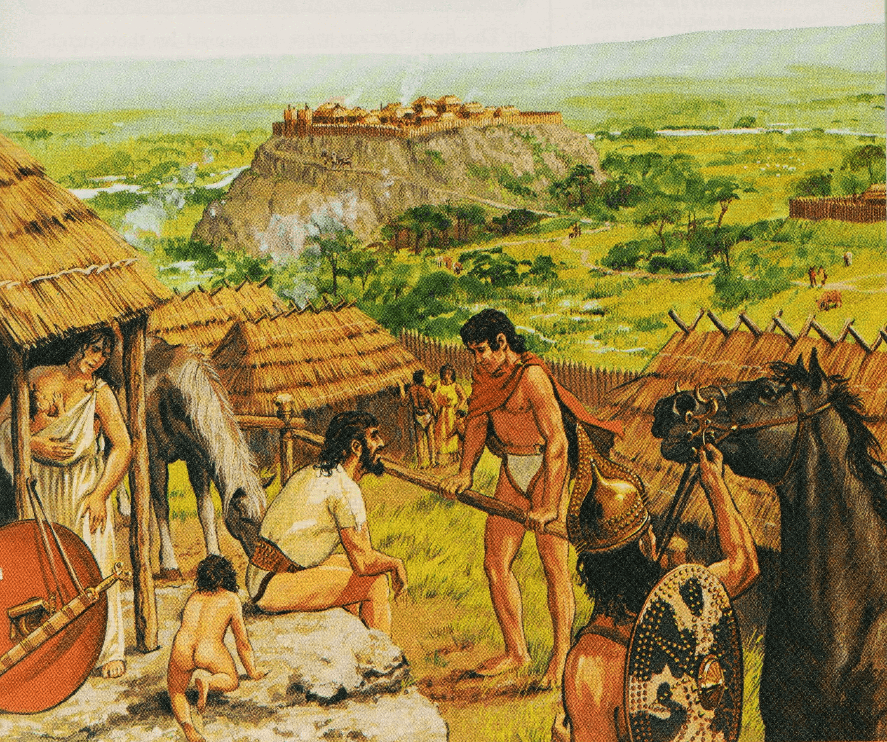
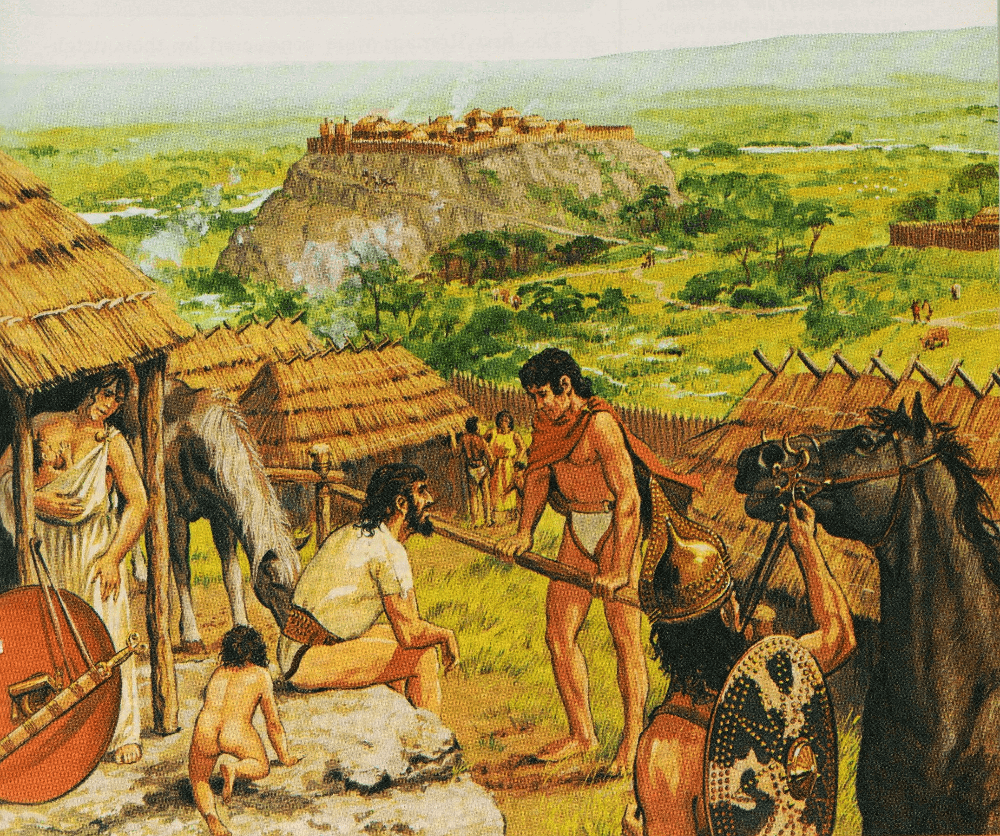

Todos los caminos conducen a Roma
Fundación de Roma
Los primeros caballos que entraron en Italia fueron durante la invasión de los itálicos, un pueblo
indo-europeo que se asentó en la península hacia el 1.300 AC, que montaban en carros. Se trataba de
los latinos y los vénetos emparentados con los tracios se asentaron en el interior de la península.
Posteriormente con la emigración de Pueblos del Mar (1.200 a 900 AC) llegaron a la península las
tribus de umbros, volscos, marsos, etc. que también eran de origen indoeuropeo y que formaron un
importante estrato de población y que también conocían el caballo.
Luego se produce otra invasión entre los siglos IX y VIII AC de pueblos de Asia Menor y de la península Balcánica como los espartanos que se establecieron en Tarento, los etruscos que eran frigio-tesalianos y los ramnes que eran lidios.
Todos estos pueblos eran en su origen ganaderos, de ahí que sus primeras ofendas a los dioses fuesen leche y no vino, así como animales en vez de pan. La celebración del Equus Bellator, el sacrificio anual de un caballo perduró en el tiempo. Esta ceremonia se celebraba en Persia, Escitia e incluso entre los aqueos y los cántabros.
La situación en l península Itálica en el siglo VIII era: al sur los griegos o Magna Grecia, cuya ciudad más famosa era Taras para los griegos o Tarentum (Tarento) para los romanos, estaba situada sobre la costa en la parte interior del talón de la bota italiana.
La isla de Sicilia estaba colonizada por los griegos en la parte oriental y por los cartagineses en la occidental. La ciudad más famosa era Siracusa, fundada en el 734 AC. Estaba ubicada en la costa suroriental de la isla.
Los etruscos dominaban el centro norte de Italia, y al sur de ellos se encontraba el Lacio, que se extendía a lo largo de la costa por unos 150 kilómetros al sudoeste de Etruria. El Lacio, al igual que Etruria, no constituía un gobierno centralizado. En cambio, cada distrito consistía en una serie de ciudades-Estado, pequeñas zonas formadas por una región agrícola más una ciudad central. Cada ciudad-Estado era independiente, pero formaban alianzas con las ciudades vecinas para su defensa contra un enemigo común. Había unas treinta ciudades en el Lacio, que tenían una lengua común (el latín) y costumbres similares, se unieron para formar una Liga Latina alrededor del 900 AC, probablemente para defenderse contra los etruscos, quienes a la sazón estaban empezando a establecerse firmemente en el Noroeste. La ciudad más importante y la dominante de la Liga Latina por aquellos remotos días era Alba Longa, situada a unos 20 kilómetros al sudeste del lugar en el que se levantaría más tarde Roma.

Según la leyenda, el dios Marte iba paseando por la orilla de un río de la ciudad latina de Alba Longa, allí vio a una mujer dormida en la orilla y quedó enamorado en el instante. Tuvieron dos hijos llamados Rómulo y Remo. Una vez nacidos los hijos de Rea Silvia, los padres de los gemelos los metieron en una canasta y los depositaron en el río, siendo transportados y llegaron a las orillas de un lugar. Cerca vivía un pastor llamado Fáustulo y su esposa Aca Larentia, que se apodaba la Luperca que significa loba que los amamantó (de ahí la leyenda de que fueron amamantados por una loba). El pastor encontró a los bebés, los llevó a su casa y los adoptó. Cuando se hicieron adultos, los hermanos fueron informados de su historia, así que regresaron a Alba Longa, mataron a Amulio y liberaron a su abuelo Numitor, devolviéndolo al trono.
Rómulo y Remo se propusieron edificar una nueva ciudad en el mismo lugar en el que fueron encontrados. Decidieron que uno construiría el pueblo mientras que el otro ayudaría. Así que empezaron a preguntar a los dioses para informarse de quién iría a dirigirla. Rómulo fue a la cima del monte Palatino y tiró su lanza en el monte para encontrar el lugar. La lanza se convirtió en el Corniolus, el árbol sagrado de Roma. Remo a la cima del monte Aventino. Rómulo se convenció de que él había sido seleccionado por los dioses, ya que recibió el augurio que volaba sobre él fueron un círculo de aves.
Para la fundación siguieron los ritos tradicionales de su época para fundar ciudades. Con la ayuda de una vaca y un toro blanco, tirando de un arado trazó el perímetro de la nueva ciudad. Remo saltó sobre el surco, violando la muralla, lo cual era una especie de sacrilegio, que fue la primera pena capital del homo sacer (que era el castigo por pasar), pues la muralla se trazaba desde el primer momento para ser inviolable. Y de acuerdo con la tradición, Rómulo lo mató a espada, para que los dioses no permitieran que en el futuro la muralla fuese violada de nuevo.
La realidad es que la ciudad de Roma surgió de los asentamientos de tribus latinas, sabinas y etruscas, situándose los primeros habitantes de Roma en las dos colinas (posteriormente siete), junto al río Tíber, donde hay una isla donde el río puede ser atravesado. Debido a la proximidad del río y del vado, Roma estaba en una encrucijada para el tráfico y el comercio.
Alrededor del siglo VIII AC, los asentamientos se unificaron bajo el nombre de ”Roma Quadrata” o una muralla en forma de cuadrilátero cuyo perimetro se dice fue trazado por Romulo. Roma fue también llamada “urbe”, y este nombre, que después en latín significaría genéricamente cualquier otro pueblo, proviene de “urvus“, surco realizado con por el arado de Rómulo para establecer los límites de la ciudad. La leyenda cuenta que Roma fue fundada por Rómulo el 21 de abril de 753 AC.
Luego se produce otra invasión entre los siglos IX y VIII AC de pueblos de Asia Menor y de la península Balcánica como los espartanos que se establecieron en Tarento, los etruscos que eran frigio-tesalianos y los ramnes que eran lidios.
Todos estos pueblos eran en su origen ganaderos, de ahí que sus primeras ofendas a los dioses fuesen leche y no vino, así como animales en vez de pan. La celebración del Equus Bellator, el sacrificio anual de un caballo perduró en el tiempo. Esta ceremonia se celebraba en Persia, Escitia e incluso entre los aqueos y los cántabros.
La situación en l península Itálica en el siglo VIII era: al sur los griegos o Magna Grecia, cuya ciudad más famosa era Taras para los griegos o Tarentum (Tarento) para los romanos, estaba situada sobre la costa en la parte interior del talón de la bota italiana.
La isla de Sicilia estaba colonizada por los griegos en la parte oriental y por los cartagineses en la occidental. La ciudad más famosa era Siracusa, fundada en el 734 AC. Estaba ubicada en la costa suroriental de la isla.
Los etruscos dominaban el centro norte de Italia, y al sur de ellos se encontraba el Lacio, que se extendía a lo largo de la costa por unos 150 kilómetros al sudoeste de Etruria. El Lacio, al igual que Etruria, no constituía un gobierno centralizado. En cambio, cada distrito consistía en una serie de ciudades-Estado, pequeñas zonas formadas por una región agrícola más una ciudad central. Cada ciudad-Estado era independiente, pero formaban alianzas con las ciudades vecinas para su defensa contra un enemigo común. Había unas treinta ciudades en el Lacio, que tenían una lengua común (el latín) y costumbres similares, se unieron para formar una Liga Latina alrededor del 900 AC, probablemente para defenderse contra los etruscos, quienes a la sazón estaban empezando a establecerse firmemente en el Noroeste. La ciudad más importante y la dominante de la Liga Latina por aquellos remotos días era Alba Longa, situada a unos 20 kilómetros al sudeste del lugar en el que se levantaría más tarde Roma.

Primeros habitantes de Roma, al fondo la colina Capitolina. Autor Peter Connolly
Según la leyenda, el dios Marte iba paseando por la orilla de un río de la ciudad latina de Alba Longa, allí vio a una mujer dormida en la orilla y quedó enamorado en el instante. Tuvieron dos hijos llamados Rómulo y Remo. Una vez nacidos los hijos de Rea Silvia, los padres de los gemelos los metieron en una canasta y los depositaron en el río, siendo transportados y llegaron a las orillas de un lugar. Cerca vivía un pastor llamado Fáustulo y su esposa Aca Larentia, que se apodaba la Luperca que significa loba que los amamantó (de ahí la leyenda de que fueron amamantados por una loba). El pastor encontró a los bebés, los llevó a su casa y los adoptó. Cuando se hicieron adultos, los hermanos fueron informados de su historia, así que regresaron a Alba Longa, mataron a Amulio y liberaron a su abuelo Numitor, devolviéndolo al trono.
Rómulo y Remo se propusieron edificar una nueva ciudad en el mismo lugar en el que fueron encontrados. Decidieron que uno construiría el pueblo mientras que el otro ayudaría. Así que empezaron a preguntar a los dioses para informarse de quién iría a dirigirla. Rómulo fue a la cima del monte Palatino y tiró su lanza en el monte para encontrar el lugar. La lanza se convirtió en el Corniolus, el árbol sagrado de Roma. Remo a la cima del monte Aventino. Rómulo se convenció de que él había sido seleccionado por los dioses, ya que recibió el augurio que volaba sobre él fueron un círculo de aves.
Para la fundación siguieron los ritos tradicionales de su época para fundar ciudades. Con la ayuda de una vaca y un toro blanco, tirando de un arado trazó el perímetro de la nueva ciudad. Remo saltó sobre el surco, violando la muralla, lo cual era una especie de sacrilegio, que fue la primera pena capital del homo sacer (que era el castigo por pasar), pues la muralla se trazaba desde el primer momento para ser inviolable. Y de acuerdo con la tradición, Rómulo lo mató a espada, para que los dioses no permitieran que en el futuro la muralla fuese violada de nuevo.
La realidad es que la ciudad de Roma surgió de los asentamientos de tribus latinas, sabinas y etruscas, situándose los primeros habitantes de Roma en las dos colinas (posteriormente siete), junto al río Tíber, donde hay una isla donde el río puede ser atravesado. Debido a la proximidad del río y del vado, Roma estaba en una encrucijada para el tráfico y el comercio.
Alrededor del siglo VIII AC, los asentamientos se unificaron bajo el nombre de ”Roma Quadrata” o una muralla en forma de cuadrilátero cuyo perimetro se dice fue trazado por Romulo. Roma fue también llamada “urbe”, y este nombre, que después en latín significaría genéricamente cualquier otro pueblo, proviene de “urvus“, surco realizado con por el arado de Rómulo para establecer los límites de la ciudad. La leyenda cuenta que Roma fue fundada por Rómulo el 21 de abril de 753 AC.
Las siete colinas de Roma, se puede ver el puente sobre el río Tíber, y las murallas del Palatino.
El nombre de Roma puede referirse a Rómulo. También puede rastrearse un origen etrusco, que apuntaría a la gens etrusca Ruma, o a Rumon, nombre etrusco del río Tíber. Estudios recientes parecen darle preferencia a una raíz de origen indoeuropeo con significado de “río”; Roma en ese caso significaría “el pueblo sobre el río”.